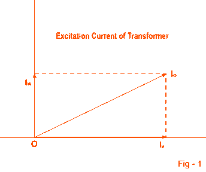
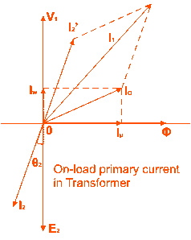
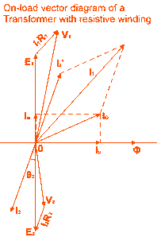

Theory of Transformer on load and no load operation
Theory of Transformer
We have discussed about the theory of ideal transformer for better understanding of actual elementary theory of transformer. Now we will go through the practical aspects one by one of an electrical power transformer and try to draw vector diagram of transformer in every step. As we said that, in an ideal transformer; there are no core losses in transformer i.e. loss free core of transformer. But in practical transformer, there are hysteresis and eddy current losses in transformer core.
Theory of Transformer on No-Load
Theory of Transformer On No-load, and Having No Winding Resistance and No Leakage Reactance of Transformer
Let us consider one electrical transformer with only core losses, which means, it has only core losses but no copper loss and no leakage reactance of transformer. When an alternating source is applied in the primary, the source will supply the electric current for magnetizing the core of transformer. But this electric current is not the actual magnetizing current, it is little bit greater than actual magnetizing current. Actually, total electric current supplied from the source has two components, one is magnetizing electric current which is merely utilized for magnetizing the core and other component of the source electric current is consumed for compensating the core losses in transformer. Because of this core loss component, the source electric current in transformer on no-load condition supplied from the source as source electric current is not exactly at 90° lags of supply voltage, but it lags behind an angle θ is less than 90°.
If total electric current supplied from source is Io, it will have one component in phase with supply voltage V1 and this component of the electric current Iw is core loss component. This component is taken in phase with source voltage, because it is associated with active or working losses in transformer. Other component of the source electric current is denoted as Iμ.
This component produces the alternating magnetic flux in the core, so it is watt-less; means it is reactive part of the transformer source current.
Hence Iμ will be in quadrature with V1 and in phase with alternating flux Φ.
Hence, total primary electric current in transformer on no-load condition can be represented as
Now you have seen how simple is to explain the theory of transformer in no-load.

Theory of Transformer on Load
Theory of Transformer On Load But Having No Winding Resistance and Leakage Reactance
Now we will examine the behavior of above said transformer on load, that means load is connected to the secondary terminals. Consider, transformer having core loss but no copper loss and leakage reactance. Whenever load is connected to the secondary winding, load current will start to flow through the load as well as secondary winding. This load current solely depends upon the characteristics of the load and also upon secondary voltage of the transformer. This electric current is called secondary electric current or load current, here it is denoted as I2. As I2 is flowing through the secondary, a self mmf in secondary winding will be produced. Here it is N2I2, where, N2 is the number of turns of the secondary winding of transformer.
electric current in transformer on load" title="On-load Primary Current in Transformer"/>
This mmf or magneto motive force in the secondary winding produces flux φ2. This φ2 will oppose the main magnetizing flux and momentarily weakens the main flux and tries to reduce primary self induced emf E1. If E1 falls down below the primary source voltage V1, there will be an extra electric current flowing from source to primary winding. This extra primary electric current I2′ produces extra flux φ′ in the core which will neutralize the secondary counter flux φ2. Hence the main magnetizing flux of core, Φ remains unchanged irrespective of load.
So total current, this transformer draws from source can be divided into two components, first one is utilized for magnetizing the core and compensating the core loss i.e. Io. It is no-load component of the primary current. Second one is utilized for compensating the counter flux of the secondary winding. It is known as load component of the primary current.
Hence total no load primary electric current I1 of a electrical power transformer having no winding resistance and leakage reactance can be represented as follows
Where θ2 is the angle between Secondary Voltage and Secondary Current of transformer.
Now we will proceed one further step toward more practical aspect of a transformer.
Theory of Transformer On Load, With Resistive Winding, But No Leakage Reactance
Now, consider the winding resistance of transformer but no leakage reactance. So far we have discussed about the transformer which has ideal windings, means winding with no resistance and leakage reactance, but now we will consider one transformer which has internal resistance in the winding but no leakage reactance. As the windings are resistive, there would be a voltage drop in the windings.

We have proved earlier that, total primary electric current from the source on load is I1. The voltage drop in the primary winding with resistance, R1 is R1I1. Obviously, induced emf across primary winding E1, is not exactly equal to source voltage V1. E1 is less than V1 by voltage drop I1R1.
Again in the case of secondary, the voltage induced across the secondary winding, E2 does not totally appear across the load since it also drops by an amount I2R2, where R2 is the secondary winding resistance and I2 is secondary electric current or load current.
Similarly, voltage equation of the secondary side of the transformer will be
Theory of Transformer On Load, With Resistance As Well As Leakage Reactance in Transformer Windings
Now we will consider the condition, when there is leakage reactance of transformer as well as winding resistance of transformer.

Let leakage reactances of primary and secondary windings of the transformer are X1 and X2 respectively.
Hence total impedance of primary and secondary winding of transformer with resistance R1 and R2 respectively, can be represented as,
We have already established the voltage equation of a transformer on load, with only resistances in the windings, where voltage drops in the windings occur only due to resistive voltage drop. But when we consider leakage reactances of transformer windings, voltage drop occurs in the winding not only because of resistance, it is because of impedance of transformer windings. Hence, actual voltage equation of a transformer can easily be determined by just replacing resistances R1 & R2 in the previously established voltage equations by Z1 and Z2.
Therefore, the voltage equations are,
Resistance drops are in the direction of electric current vector but, reactive drop will be perpendicular to the electric current vector as shown in the above vector diagram of transformer.
 by
by